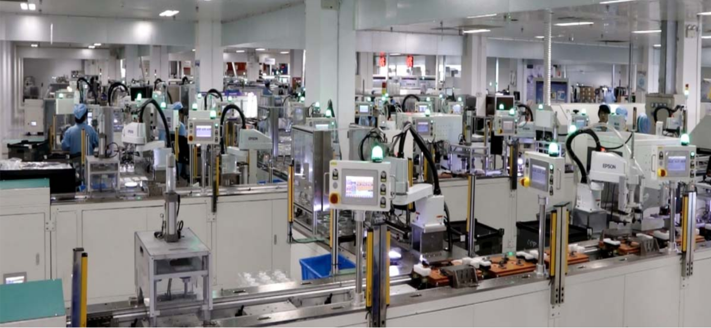
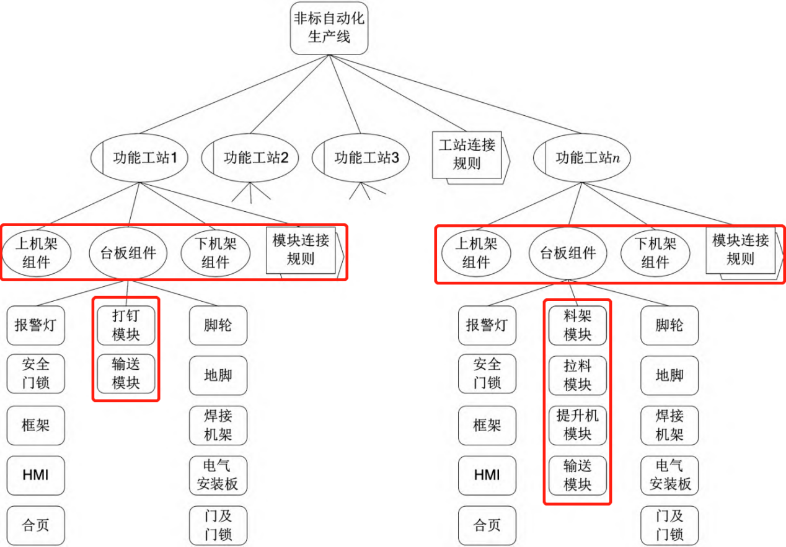
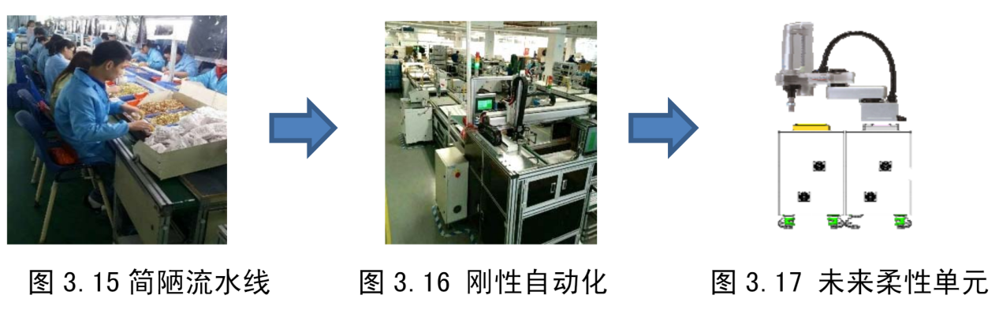
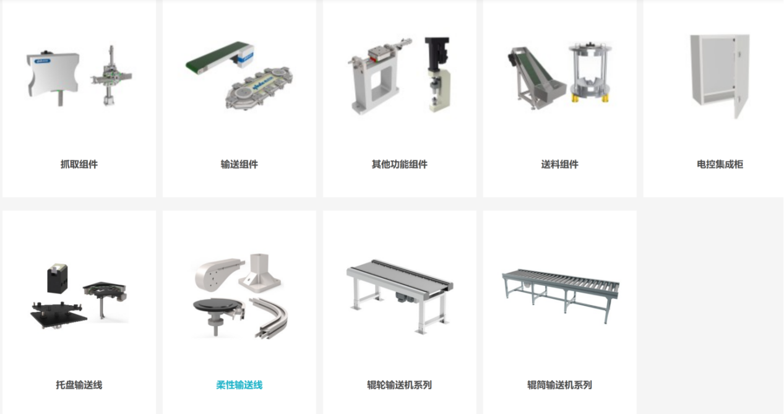
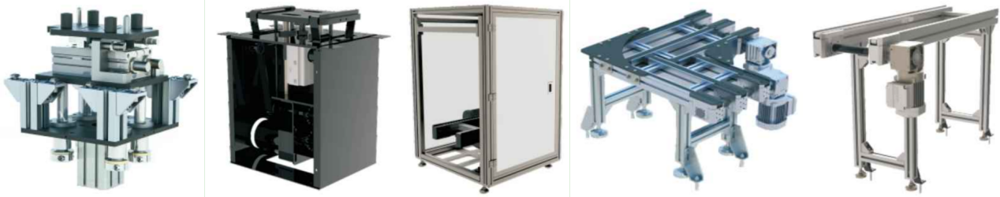

The application and development of modular design in the non-standard automation equipment industry
1. What is non-standard equipment?
Non-standard equipment refers to equipment that is not made in accordance with unified national standards and general specifications, but is custom designed and manufactured according to actual needs.，It has the characteristics of special machine, small batch, multi-function, multiple types and high complexity.
Wherever there is a need for machines to replace people, there will beNon-standard automation equipment，它The industries involved are very wide, covering almost all industrial and production fields，With market space of hundreds of billions，Its main participants are professional non-standard automation equipment manufacturers and the automation departments of large manufacturing companies.


2. Industry pain points of non-standard equipment
Under fierce market competition, customers’ requirements for non-standard automated production lines are mainly:① Short construction period, low investment, and low risk; ② Short order switching time; ③ The production line can be iteratively upgraded quickly and at low cost, and is compatible with the manufacturing of new products; ④ There are fewer types of standard parts and customized parts, the difficulty of spare parts management is low, and the high skill level of users and maintenance personnel is not required. In order to solve the contradiction between the non-standard customized design conditions of the automated production line and the actual needs of customers, and achieve the goals of shortening the project cycle, reducing design costs, improving design quality, and meeting customer needs, it is necessary to find an effective method for rapid design and high-quality management of non-standard automated production lines.
A typical structure of non-standard automated production lines

3. What problems can modularization solve?
The concept of modularity is20century50The era was formally proposed by some European and American countries, and subsequently received more and more widespread attention and research. In the field of automation equipment, modularization refers to dividing the equipment into multiple modules with specific functions. These modules can operate independently or be linked with other modules. Each module has independent functions and interfaces, which facilitates combination and replacement, and improves the flexibility and scalability of the equipment. At present, modular design methods have been applied in many industries such as machinery, electronics, shipbuilding, and construction. Some equipment manufacturers have applied modular thinking to equipment production to improve the overall manufacturing speed of equipment through pre-assembly of commonly used modules. Modularity has the following advantages:
（1）The design and manufacturing cycle is shortened. When the user makes a request, he only needs to replace a certain module or directly call an existing module to meet the new design requirements, which greatly shortens the design and manufacturing cycle.
new products=Common module (unchanged part)+Retrofit module (variable part)+New functional module (dedicated section)
（2）Improve equipment flexibility. Through the rapid replacement of functional modules, equipment flexibility can be improved to meet the needs of small batches and quick delivery of equipment.
（3）Reduce manufacturing difficulty. After modularization, the equipmentBOMThe reduction in quantity and specifications greatly reduces the difficulty of management of the supply chain and production and manufacturing links.
（4）Reduce costs. After modularization, the same functional module can be used for several products, and cost reduction can be achieved through large-scale production.
（5）Easy to maintain. When repairing the product, only the damaged modules need to be replaced, which is convenient and fast.
（6）The performance is stable and reliable. Modular design makes the definition of product structure relatively fixed, allowing manufacturers to conduct careful research and gradually improve product stability.

4. Modular industry practice
At present, some manufacturers have begun to try modular supply. Modular supply requires parts manufacturers to have an industrial foundation for multi-category layout and the ability to integrate supply chains.
Yiheda has launched its own modular products on the official website, which are divided into grabbing components, conveying components, feeding components, other functional components, electronic control integrated cabinets, etc. according to functions.

Jialichuang has also launched its own modular products, including jacking rotary machines, jacking traverse machines, elevators, forced transfer machines, conveyors, etc.

Tianyi Intelligence was founded in2013In 2016, it was mainly engaged in the research and development, production, sales and service of precision standard parts and functional modules, tool loading fixtures and automation equipment.(线)Manufacturing. The company has long served leading customers in the industry. Based on years of accumulation, it has completed an industrial layout of multiple categories and is close to customers. Relying on close cooperation with the industry chain, it can provide customers withModularproducts and services to help customers improve efficiency and reduce costs。